6023
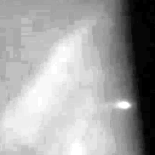
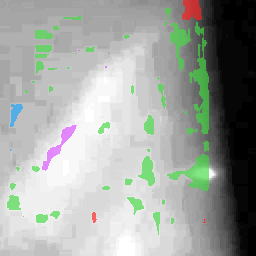
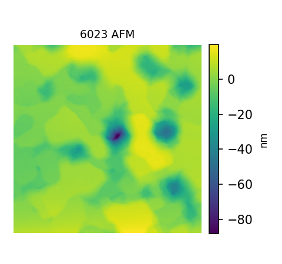
morph=0.359, spot=22.1, streak=37.4, Rq=10.3 nm, flags=insufficient_valid_frames
This static report reuses the existing RHEED shape preprocessing and spot/streak geometry implementation. It reports association and diagnostics, not causal or optimized prediction claims.
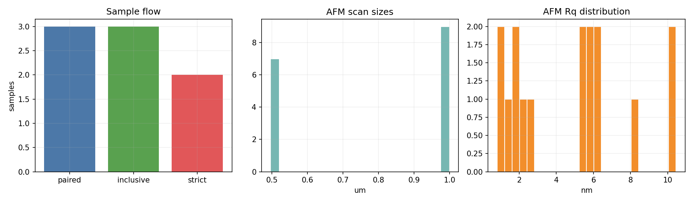
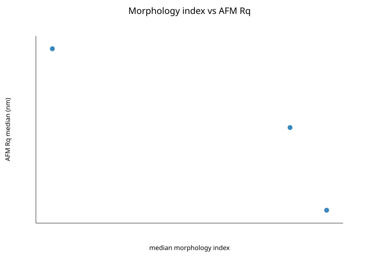
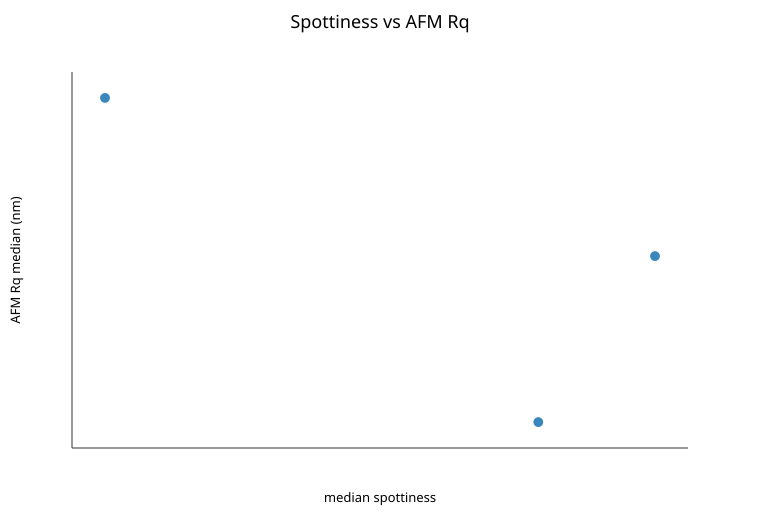
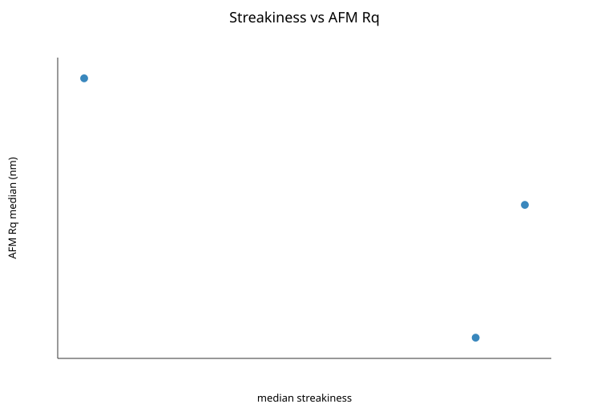
| analysis_subset | target | target_scale | predictor | predictor_note | n_samples | spearman_rho | spearman_p_asymptotic | spearman_bootstrap_ci_low | spearman_bootstrap_ci_high | spearman_permutation_p | kendall_tau | kendall_p_asymptotic | bootstrap_resamples | permutation_resamples |
|---|---|---|---|---|---|---|---|---|---|---|---|---|---|---|
| primary_1um_inclusive | afm_Rq_median_nm | raw_nm | median_morphology_index | higher means more spotty | 3 | -1 | 0 | -1 | 0.3333 | 500 | 500 | |||
| primary_1um_inclusive | afm_Rq_median_nm | raw_nm | median_spottiness | raw spot component score | 3 | -0.5 | 0.6667 | -0.3333 | 1 | 500 | 500 | |||
| primary_1um_inclusive | afm_Rq_median_nm | raw_nm | median_streakiness | raw streak/bar component score | 3 | -0.5 | 0.6667 | -0.3333 | 1 | 500 | 500 | |||
| primary_1um_inclusive | afm_Rq_median_nm | log10_nm | median_morphology_index | higher means more spotty | 3 | -1 | 0 | -1 | 0.3333 | 500 | 500 | |||
| primary_1um_inclusive | afm_Rq_median_nm | log10_nm | median_spottiness | raw spot component score | 3 | -0.5 | 0.6667 | -0.3333 | 1 | 500 | 500 | |||
| primary_1um_inclusive | afm_Rq_median_nm | log10_nm | median_streakiness | raw streak/bar component score | 3 | -0.5 | 0.6667 | -0.3333 | 1 | 500 | 500 | |||
| primary_1um_strict_qc | afm_Rq_median_nm | raw_nm | median_morphology_index | higher means more spotty | 2 | 500 | 500 | |||||||
| primary_1um_strict_qc | afm_Rq_median_nm | raw_nm | median_spottiness | raw spot component score | 2 | 500 | 500 | |||||||
| primary_1um_strict_qc | afm_Rq_median_nm | raw_nm | median_streakiness | raw streak/bar component score | 2 | 500 | 500 | |||||||
| primary_1um_strict_qc | afm_Rq_median_nm | log10_nm | median_morphology_index | higher means more spotty | 2 | 500 | 500 | |||||||
| primary_1um_strict_qc | afm_Rq_median_nm | log10_nm | median_spottiness | raw spot component score | 2 | 500 | 500 | |||||||
| primary_1um_strict_qc | afm_Rq_median_nm | log10_nm | median_streakiness | raw streak/bar component score | 2 | 500 | 500 | |||||||
| all_scan_sizes_inclusive | afm_Rq_all_scan_sizes_median_nm | raw_nm | median_morphology_index | higher means more spotty | 3 | -1 | 0 | -1 | 0.3333 | 500 | 500 | |||
| all_scan_sizes_inclusive | afm_Rq_all_scan_sizes_median_nm | raw_nm | median_spottiness | raw spot component score | 3 | -0.5 | 0.6667 | -0.3333 | 1 | 500 | 500 | |||
| all_scan_sizes_inclusive | afm_Rq_all_scan_sizes_median_nm | raw_nm | median_streakiness | raw streak/bar component score | 3 | -0.5 | 0.6667 | -0.3333 | 1 | 500 | 500 | |||
| all_scan_sizes_inclusive | afm_Rq_all_scan_sizes_median_nm | log10_nm | median_morphology_index | higher means more spotty | 3 | -1 | 0 | -1 | 0.3333 | 500 | 500 | |||
| all_scan_sizes_inclusive | afm_Rq_all_scan_sizes_median_nm | log10_nm | median_spottiness | raw spot component score | 3 | -0.5 | 0.6667 | -0.3333 | 1 | 500 | 500 | |||
| all_scan_sizes_inclusive | afm_Rq_all_scan_sizes_median_nm | log10_nm | median_streakiness | raw streak/bar component score | 3 | -0.5 | 0.6667 | -0.3333 | 1 | 500 | 500 |



morph=0.359, spot=22.1, streak=37.4, Rq=10.3 nm, flags=insufficient_valid_frames
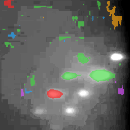
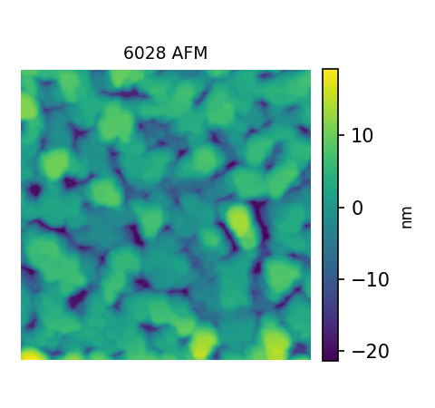
morph=0.368, spot=28.7, streak=48.6, Rq=6.07 nm, flags=
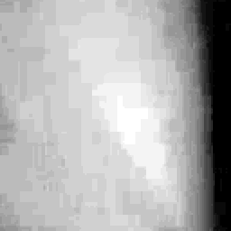
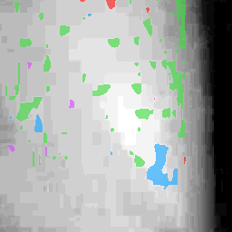
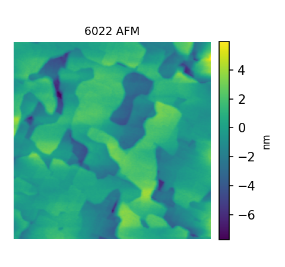
morph=0.369, spot=27.3, streak=47.4, Rq=1.65 nm, flags=
morph=0.369, spot=27.3, streak=47.4, Rq=1.65 nm, flags=
morph=0.368, spot=28.7, streak=48.6, Rq=6.07 nm, flags=
morph=0.359, spot=22.1, streak=37.4, Rq=10.3 nm, flags=insufficient_valid_frames
Not enough paired samples for quadrant gallery.
Per-sample traces are under figures/temporal/.
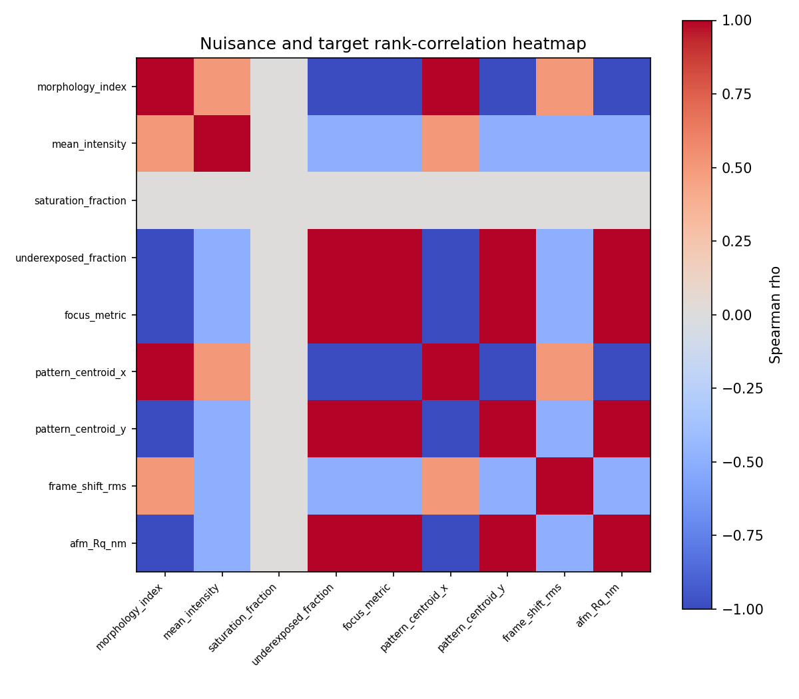
| model | target | n_samples | feature_count | grouping | out_of_fold_mae | out_of_fold_rmse | out_of_fold_r2 | out_of_fold_spearman | delta_mae_vs_nuisance | delta_r2_vs_nuisance |
|---|---|---|---|---|---|---|---|---|---|---|
| A_nuisance_only | log10_afm_Rq_median_nm | 3 | 8 | leave_one_growth_run_out | 6.355 | 10.8 | -1044 | 1 | 0 | 0 |
| B_rheed_morphology_only | log10_afm_Rq_median_nm | 3 | 1 | leave_one_growth_run_out | 1.024 | 1.291 | -13.92 | 0.5 | -5.331 | 1030 |
| C_nuisance_plus_rheed | log10_afm_Rq_median_nm | 3 | 9 | leave_one_growth_run_out | 5.705 | 9.627 | -828.9 | 1 | -0.6501 | 214.7 |
| D_process_metadata_only | log10_afm_Rq_median_nm | 3 | 4 | leave_one_growth_run_out | 0.5597 | 0.6245 | -2.492 | -1 | -5.796 | 1041 |
| E_metadata_plus_rheed | log10_afm_Rq_median_nm | 3 | 5 | leave_one_growth_run_out | 0.508 | 0.5278 | -1.495 | 0.5 | -5.847 | 1042 |
| negative_control_score_from_nuisance | median_morphology_index | 3 | 8 | leave_one_growth_run_out | 0.01688 | 0.02174 | -22.97 | 1 |

| stratum_type | stratum | n_samples | analysis_status | spearman_rho | spearman_p |
|---|---|---|---|---|---|
| material | Ctr | 2 | too_few_samples | ||
| material | unknown | 1 | too_few_samples |
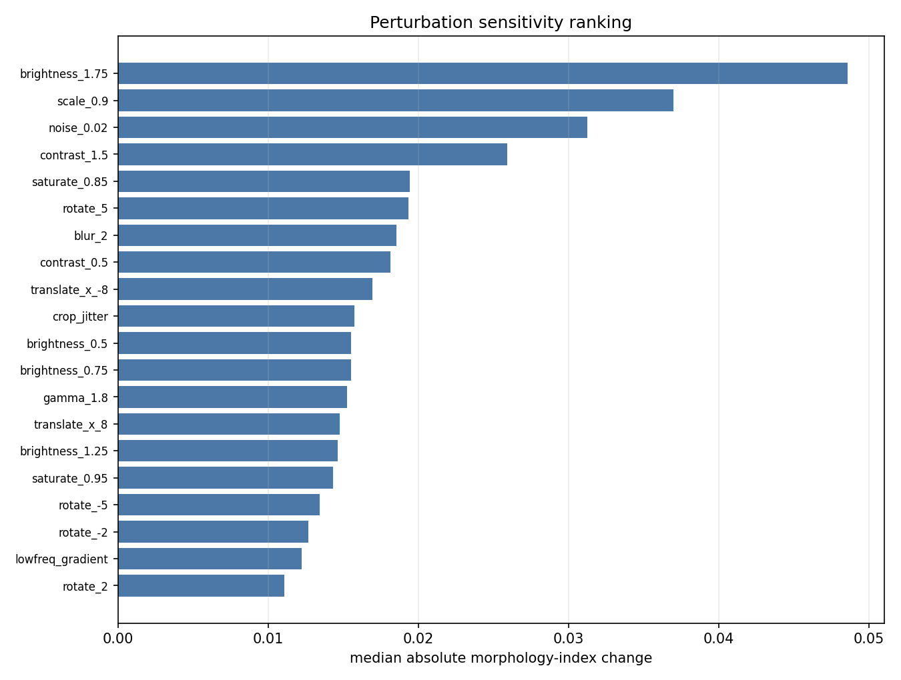
| perturbation | n_frames | median_absolute_score_change | p90_absolute_score_change | rank_preservation_spearman | detector_failure_rate |
|---|---|---|---|---|---|
| brightness_1.75 | 12 | 0.04858 | 0.1435 | -0.5175 | 0 |
| scale_0.9 | 12 | 0.03697 | 0.1086 | -0.3846 | 0 |
| noise_0.02 | 12 | 0.03123 | 0.04282 | -0.1958 | 0 |
| contrast_1.5 | 12 | 0.02592 | 0.06224 | -0.6434 | 0 |
| saturate_0.85 | 12 | 0.01943 | 0.06261 | -0.3077 | 0 |
| rotate_5 | 12 | 0.01935 | 0.02408 | 0.5315 | 0 |
| blur_2 | 12 | 0.01853 | 0.03407 | 0.3007 | 0 |
| contrast_0.5 | 12 | 0.01811 | 0.03814 | 0.3846 | 0 |
| translate_x_-8 | 12 | 0.01692 | 0.02317 | 0.4965 | 0 |
| crop_jitter | 12 | 0.01572 | 0.02685 | 0.6434 | 0 |
| brightness_0.5 | 12 | 0.01551 | 0.03288 | 0.3566 | 0 |
| brightness_0.75 | 12 | 0.01551 | 0.03288 | 0.3566 | 0 |
| gamma_1.8 | 12 | 0.01525 | 0.02958 | 0.3007 | 0 |
| translate_x_8 | 12 | 0.01475 | 0.02629 | 0.3846 | 0 |
| brightness_1.25 | 12 | 0.01463 | 0.08715 | -0.5874 | 0 |
| saturate_0.95 | 12 | 0.01433 | 0.04319 | 0.0979 | 0 |
| rotate_-5 | 12 | 0.01344 | 0.03539 | 0.2797 | 0 |
| rotate_-2 | 12 | 0.01268 | 0.02509 | 0.4615 | 0 |
| lowfreq_gradient | 12 | 0.01223 | 0.03938 | 0.04895 | 0 |
| rotate_2 | 12 | 0.01106 | 0.02065 | 0.6154 | 0 |
Blinded review materials are in manual_review/. Human ratings were not fabricated; the validation-result table records the pending annotation status.